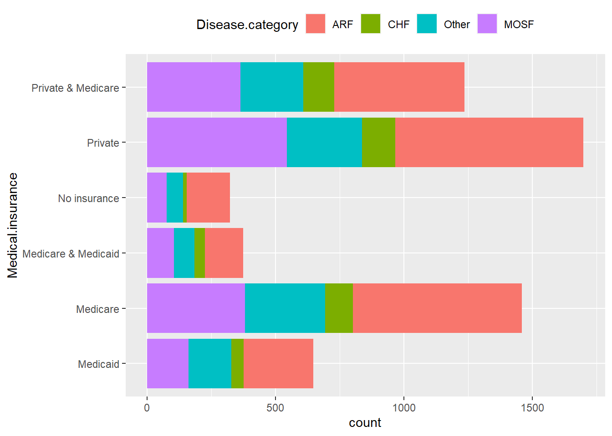
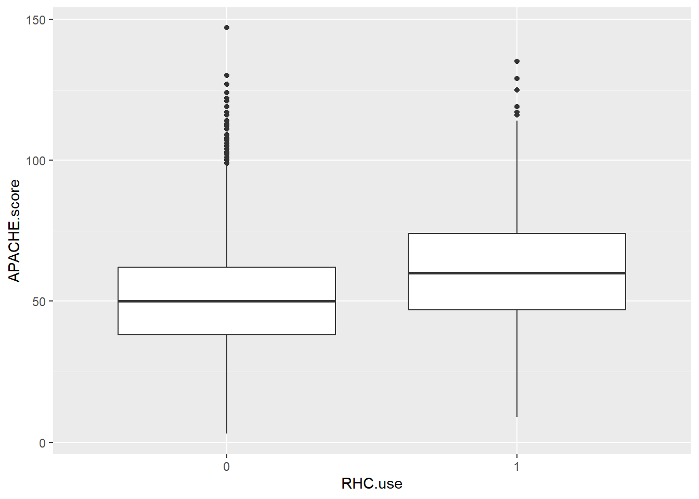

ggplot(ObsData, aes(y = Medical.insurance)) +
geom_bar(aes(fill = Disease.category)) +
theme(legend.position = "top")
In this tutorial, we will demonstrate methods for exploring pairwise relationships in the data. By doing so, we can identify which variables are correlated and uncover relationships that may be worth further examination in more detailed analyses.
This tutorial utilizes the same dataset as in previous tutorials, such as those focusing on a predictive question, machine learning with a continuous outcome, and machine learning with a binary outcome.
Stacked bar charts allow us to visualize the counts for combinations of two categorical variables:
For numerical variables, scatterplots can be used to observe any patterns or relationships between two variables:
Another useful tool for examining pairwise relationships between numerical variables is a correlation heatmap:
# Select all numerical variables
ObsData_num <- select(ObsData, c("edu", "blood.pressure", "WBC", "Heart.rate", "Respiratory.rate", "Temperature", "PH", 'Weight', "Length.of.Stay"))
# Create the correlation matrix
corr_mat <- round(cor(ObsData_num), 2)
head(corr_mat)
#> edu blood.pressure WBC Heart.rate Respiratory.rate
#> edu 1.00 -0.04 -0.02 0.05 0.03
#> blood.pressure -0.04 1.00 -0.03 0.06 0.03
#> WBC -0.02 -0.03 1.00 0.03 0.01
#> Heart.rate 0.05 0.06 0.03 1.00 0.28
#> Respiratory.rate 0.03 0.03 0.01 0.28 1.00
#> Temperature 0.07 0.01 -0.01 0.22 0.14
#> Temperature PH Weight Length.of.Stay
#> edu 0.07 0.04 -0.06 0.02
#> blood.pressure 0.01 0.13 -0.02 -0.02
#> WBC -0.01 -0.06 -0.01 0.03
#> Heart.rate 0.22 0.03 0.02 0.07
#> Respiratory.rate 0.14 -0.01 -0.01 -0.01
#> Temperature 1.00 0.14 0.02 0.09
# Reshape the correlation matrix using the reshape2 package
melted_corr_mat <- reshape2::melt(corr_mat)To explore the relationship between a numerical and a categorical variable, boxplots can be utilized:
ObsData$RHC.use <- as.factor(ObsData$RHC.use)
ggplot(ObsData, aes(x = RHC.use, y = APACHE.score)) +
geom_boxplot()
Also, we can compare the distribution of blood.pressure across different levels of Disease.category using box plots. This is another example of exploring how continuous variables behave across different groups.
Similarly, you can create density plots for better visualization of distributions across groups: